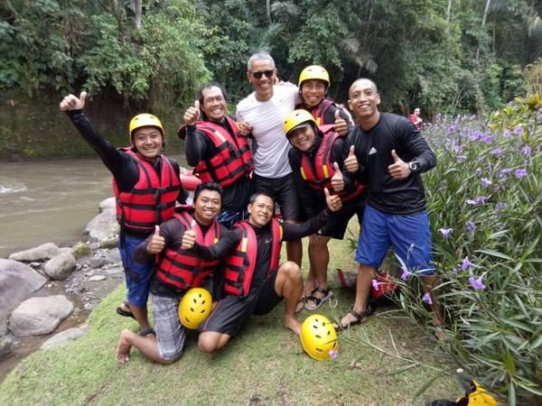
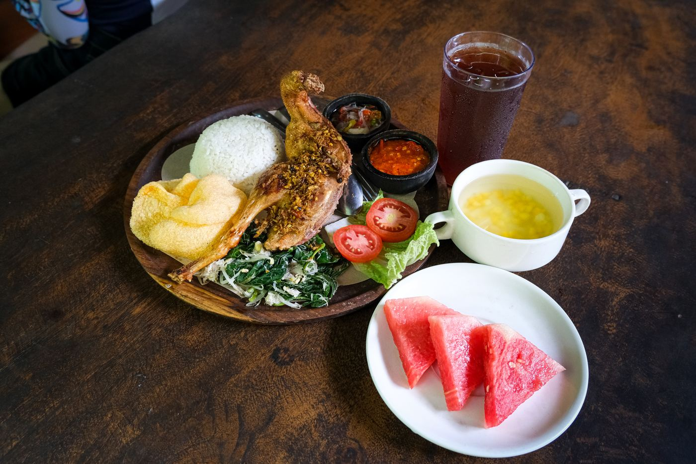
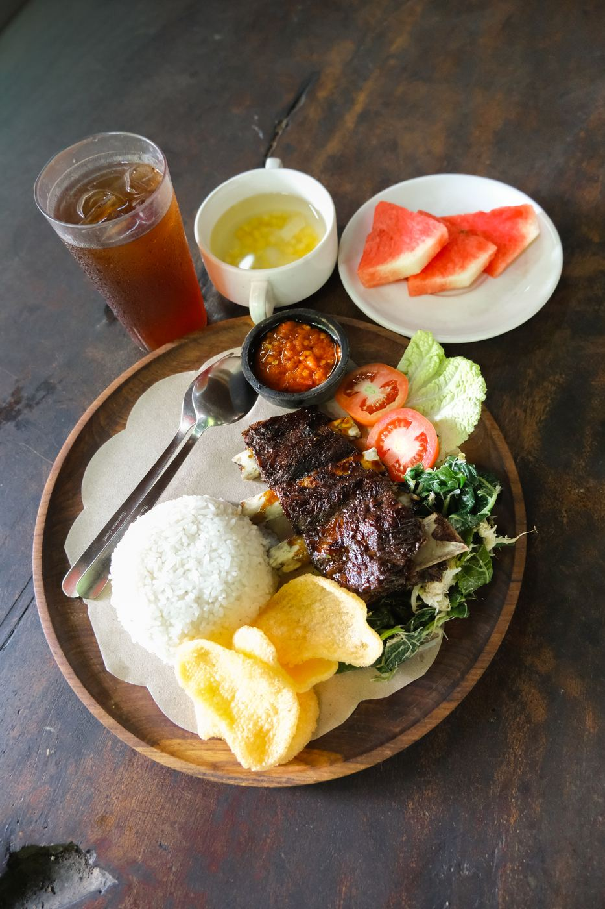

Raft the Ayung,
Feel the Real Bali.
9 kilometers of rapids, green cliffs, and hidden waterfalls — guided by residents of Bongkasa Village who grew up on the banks of this river. This isn't just rafting, it's how we introduce you to our home.

Featured in the NewsEven The U.S. President Couldn't Resist the Ayung.
In June 2017, former U.S. President Barack Obama and his family joined us for a rafting trip down the Ayung River during their holiday in Bali. Five of our senior guides led them through the rapids from Bongkasa Pertiwi all the way to the Four Seasons Resort at Sayan — still one of our proudest days on the water.
An adventure looked after by people who grew up here.
Our team was born and raised in Bongkasa Village. We know every rapid, every bend, and the best way to keep you safe while having full-on fun.
Certified Guides
Every boat is accompanied by a trained guide who knows the character of the Ayung River by heart, from calm rapids to the adrenaline-pumping ones.
International Safety Standards
Helmets, life jackets, and boats meet international safety standards. A full briefing is given before heading down to the river.
Authentic Bongkasa Village Meal
After getting soaked, enjoy a warm home-style meal cooked right by our riverside kitchen.
From the starting point to your lunch plate.
Briefing
Our team welcomes you, hands out safety gear, and walks you through the paddling basics before heading down to the river.
Rafting the Ayung River
Cut through stone cliffs, hidden waterfalls, and lush green forest, up to 2 hours 30 minutes full of laughter and adrenaline.
Clean Up & Lunch
Rinse off in the shared bathrooms, then sit back and enjoy an authentic Bongkasa meal while swapping rafting stories.
Earned after every rapid.
Every trip ends with a home-style Bongkasa meal, cooked fresh and served riverside — rice, sambal matah, crackers, and fruit alongside the main event.

Crispy Balinese Duck
Served with rice, sambal matah, crackers, and fresh fruit.

Pork Ribs with Sambal Matah
Grilled ribs finished with our raw shallot-lemongrass sambal.
Real trips, real splashes, real smiles.
A few shots straight from the boat — no stock photos, just guests and guides having the time of their lives on the Ayung.
{kind=link}
{kind=link}
{kind=link}
{kind=link}
{kind=link}